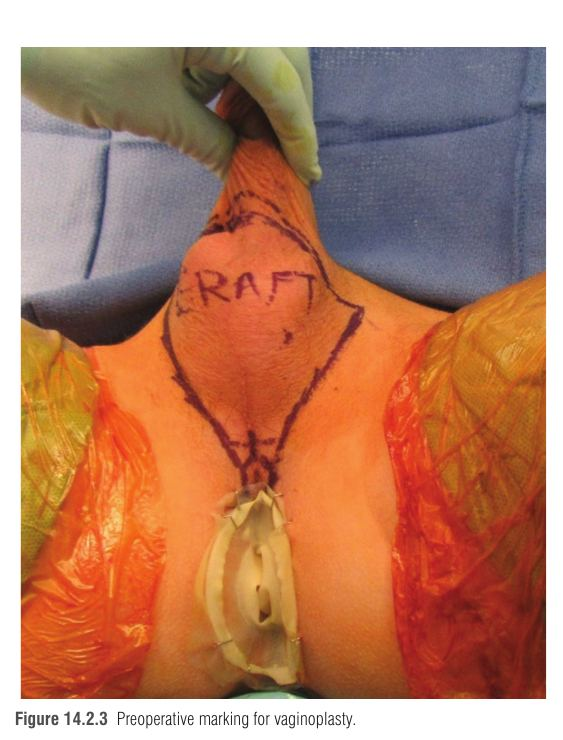
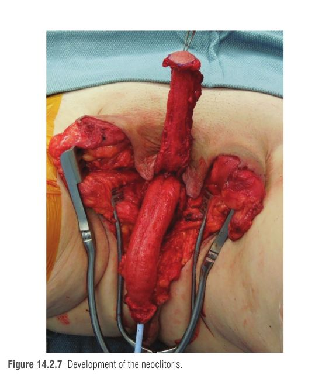
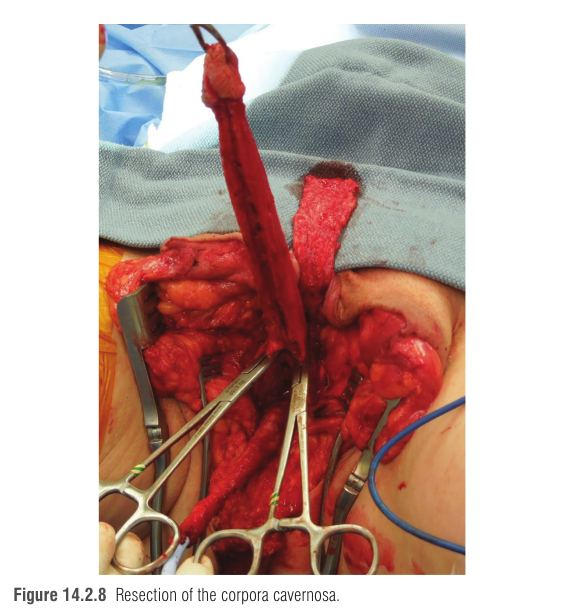
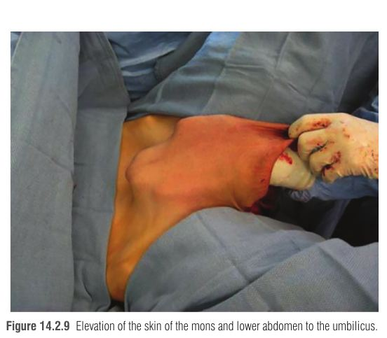
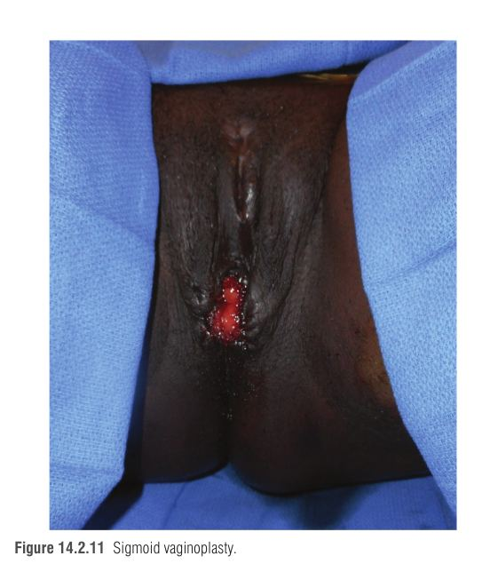

ואגינופלסטיה (vaginoplasty) היא אחד מניתוחי אישוש המגדר השכיחים ביותר, ולעתים קרובות הניתוח הראשון שנשות טרנס שוקלות. כ-28% מנשות הטרנס דיווחו שעברו ניתוח אישוש מגדר כלשהו (5%–13% מהם גניטליים), ו-45%–54% מאלה שלא עברו מקוות לעבור בעתיד. הניתוח מקל על דיספוריה מגדרית, משפר תוצאים פסיכו-סוציאליים ואיכות חיים, ושביעות הרצון ממנו גבוהה. הפרק ממשיך ישירות את פרק 23 (הערכה, WPATH, הורמונים) ועוסק בטכניקה עצמה.
תוצאה מוצלחת נמדדת בשני צירים:
| ציר | היעד |
|---|---|
| מראה | נרתיק ו-mons pubis טבעיים; שפתיים גדולות (labia majora) חלקות, מדורגות ורציפות; שפתיים קטנות (labia minora) במראה לח; הסרת שק האשכים שהוא מקור סטיגמה. |
| תפקוד | (1) קיום יחסי מין חדירתיים רצפטיביים – אם זו מטרה שהוגדרה לפני הניתוח; (2) הטלת שתן בישיבה; (3) תחושה ארוגנית. |
הניתוח מורכב מחמישה רכיבים: כריתת פין (penectomy), כריתת אשכים (orchiectomy), יצירת דגדגן (clitoroplasty), יצירת פות (vulvoplasty) ובניית תעלה נרתיקית. לבטנת התעלה יש כמה אפשרויות: עור (penile inversion) – השכיח ביותר, פלאפ מעי מבוסס-כלי-דם (intestinal vaginoplasty), שתלי עור מאזורים אחרים (בטן, מותניים, עכוזים) ו/או רקמת צפק (peritoneum).
הרעיון המרכזי: לנצל רקמה שכבר קיימת, חסרת שיער (לאחר הסרה), גמישה ובעלת אספקת דם משלה, כדי לרפד חלל חדש שנוצר בין שלפוחית/ערמונית מלפנים לבין הרקטום מאחור.
עור הפין מורם מגופי הזיקפה כפלאפ מבוסס קדמית (anteriorly based pedicled penile flap) – כלומר הוא נשאר מחובר בבסיסו לעור ה-mons, ודרכו מגיעה אספקת הדם. לכן, בניגוד לשתל חופשי, הוא לא תלוי בהתחברות מחדש למצע כדי לשרוד. העור נתפר לצינור, "מתהפך" פנימה (כמו אצבע של כפפה שדוחפים פנימה) ונכנס לחלל שנוצר. כשאורך העור לא מספיק (פין קצר, מצב אחרי ברית מילה) – מאריכים את הצינור בשתל עור מלא מהשק (full-thickness scrotal graft), שמקבל אספקת דם מהמצע שסביבו (imbibition ← inosculation ← revascularization).
אספקת הדם לפלאפים מגיעה משני מקורות:
למה שתל עור דורש הרחבה לכל החיים? כל שתל עור, ובמידה פחותה גם פלאפ, עובר התכווצות משנית (secondary contraction) בזמן ההחלמה – מיופיברובלסטים בבסיס מושכים את הרקמה פנימה. בחלל סגור הכיווץ הזה מתורגם להיצרות ולקיצור התעלה. מכאן ההבנה שפלאפ פין ושתלי עור דורשים היענות להרחבה (dilation) לכל החיים – ההרחבה היא הכוח הנגדי לכיווץ.
איור 1 – שרשרת הבנייה (מימין לשמאל) והסיבה להרחבה לכל החיים.
בטכניקה המועדפת על המחברים (penile disassembly and inversion) לכל איבר זכרי יש "תפקיד חדש". זו טבלה שכדאי לדעת בעל פה:
| רקמת מקור | הופכת ל- | הערה מנגנונית |
|---|---|---|
| עור פיר הפין | בטנת התעלה הנרתיקית | פלאפ מבוסס קדמית – "עמוד השדרה" של הניתוח כבר מעל 40 שנה |
| שתל עור מלא מהשק (± פרינאום, מפשעה, בטן תחתונה, מותניים) | הארכת עומק התעלה | נדרש לרוב; משורטט בצורת "כנפי עטלף" (bat-wing), מנוקה משומן ומשיער ונתפר על דילטור בשולחן צדדי |
| פלאפ שק-פרינאום מבוסס אחורית | הדופן האחורית של הפתח (introitus) | צד הפלאפ בצורת V כדי שהפתח לא יהיה מעגלי – צלקת מעגלית מתכווצת כמו שרוך |
| החלקים הצדדיים של השק | שפתיים גדולות | מעוצבים בסוף הניתוח |
| החלק הדורסלי של העטרה (dorsal glans) | דגדגן חדש (neoclitoris) | על הצרור העצבי-וסקולרי הדורסלי – מקור התחושה הארוגנית |
| העורלה (לא נימולים) / כ-1 ס"מ עור פיר דיסטלי (נימולים) | עורלת הדגדגן (clitoral prepuce) | אחרי ברית מילה יש פחות עור זמין |
| השופכה – מקוצרת ונחתכת ונטרלית | פלאפ שופכה ← הפרוזדור (vestibule) ושפתיים קטנות (יחד עם עור הפין) | רירית לחה ורודה בין הפתח השופכתי לדגדגן |
| קצה השופכה – מקוצר, spatulated ו-everted | פתח שופכה חדש (neo-meatus) | ה-spatulation וההיפוך החוצה מפחיתים היצרות של הפתח |
החלל נוצר בין הערמונית והשופכה (מלפנים) לבין הרקטום (מאחור). נקודות הציון בסדר הדיסקציה:
איור 2 – חתך סגיטלי סכמטי (לא בקנה מידה): החלל נוצר בין המבנים הקדמיים לרקטום, עד ההחזרה הצפקית.
איור 3 – אלגוריתם בחירת הטכניקה לפי הפרק. במרכזים מסוימים הגרסה המעיית היא קו ראשון.
| טכניקה | מתי | יתרונות | חסרונות |
|---|---|---|---|
| היפוך פין (± שתל שק) | ניתוח ראשוני – סטנדרט | ללא ניתוח בטני; עור חסר שיער (אחרי הסרה); תחושה | הרחבה לכל החיים; אין סיכה עצמית; תלוי באורך עור הפין |
| מעיית (בעיקר סיגמואיד) | תיקון אחרי כישלון; ראשוני כשיש מחסור בעור פין-שק, היפופלזיה פין-שק או טראומה לפין; קו ראשון במרכזים מסוימים | נרתיק מוסקולרי 12–15 ס"מ עם בטנה לחה ← פחות הרחבה ופחות צורך בחומר סיכה | ניתוח תוך-בטני + אנסטומוזה; הפרשות מרובות/ריח רע; קוליטיס; דימום אחרי מגע; ממאירות |
| פלאפי צפק (רובוטי/לפרוסקופי) | בשילוב עם צינור עור הפין/שתל שק להגברת עומק; ב-revision – "כיפה" אפיקלית | רקמה חסרת שיער, מוסקולרית, אתר תורם סמוי וללא צלקת; תעלות ארוכות יותר (Salibian); תלייה כלפי מעלה; מעט הפרשה | ניתוח תוך-בטני; סכנת בקע של תוכן בטני דרך התקשורת עם חלל הבטן; ההפרשה לא מגיבה לגירוי מיני, מועטה ועמוקה |
| פלאפים לא-גניטליים (ירך, פרינאום) | תיקון | פחות התכווצות | מסורבלים, מגבילים את גודל הנרתיק, אין סיכה |
| שתל עור מלא ב-revision | עומק לא מספק | חוסך ניתוח בטני | דיסקציה קשה בחלל מנותח; אתרים תורמים מוגבלים; מצע לא אידיאלי |
גרביים פניאומטיים (SCDs) ואנטיביוטיקה IV לפני החיתוך ← הרדמה כללית ← הפרין תת-עורי (פרקציונלי או לא-פרקציונלי) ← תנוחת ליתוטומיה ← חיטוי ב-povidone-iodine ← קטטר שתן.

| # | שלב | הדגש הקריטי (ולמה) |
|---|---|---|
| 1 | פלאפ שק-פרינאום אחורי – לרוב "מוגבל", ממורכז מעל פי הטבעת במקום ה-perineal body, מורם יחד עם Colles fascia | שוליים צדדיים בצורת V ← פתח לא מעגלי ← פחות התכווצות של הפתח |
| 2 | שתל עור מלא מהשק ב-"bat-wing", צמוד לגבול העליון של הפלאפ הפרינאלי | ניקוי שומן ושיער, תפירה מעל דילטור בשולחן צדדי |
| 3 | פירוק הפין: חתך ונטרלי לאורך ה-raphe + חתך היקפי בגבול עטרה-פיר; הרמת העור מגופי הזיקפה | לשמר את הצרור העצבי-וסקולרי הדורסלי – בסיס הדגדגן |
| 4 | כריתת אשכים דו-צדדית כולל חבלי הזרע, ברמת הטבעת המפשעתית החיצונית | החבלים נסוגים לתעלה ← אין בליטה ממושמשת במפשעה |
| 5 | פיתוח חלל הנרתיק: חיתוך הגיד המרכזי ← ערמונית (Lowsley) ← חיתוך Denonvilliers ← דיסקציה קהה עד ההחזרה הצפקית ± levator ani | פגיעה ברקטום היא הסיכון המרכזי; דיסקציה נאותה = עומק |
| 6 | כריתת שרירי bulbospongiosus ו-ischiocavernosus; הפרדת corpus spongiosum מה-cavernosa ודה-בלקינג של הבולבוס השופכתי | רקמה ספוגית שנשארת מתמלאת בגירוי ← נפיחות בפתח שמקשה על חדירה |
| 7 | דגדגן: מהעטרה הדורסלית על הצרור (וריד דורסלי, זוג עורקים ועצבים), דיסקציה עמוק ל-Buck's fascia עד הסימפיזה | דיסקציה במישור הנכון שומרת תחושה ואספקת דם |
| 8 | כריתה מלאה של corpora cavernosa ברמת ה-ischium | שארית זיקפתית = נפיחות/כאב בגירוי |
| 9 | הרמת עור ה-mons והבטן התחתונה עד הטבור (לפי הצורך) | מקדם את פלאפ הפין ← מיקום תוך-נרתיקי טוב יותר |
| 10 | Inset: שתל ← צינור עור הפין מעל דילטור; פלאפ פרינאלי ← פלאפ הפין; היפוך הצינור לחלל; חיתוך אליפסה בעור להעברת שופכה ודגדגן; שופכה מקוצרת ונחתכת ונטרלית ← פלאפ פרוזדור; העורלה/עור דורסלי ← הפלאפ; השק ← שפתיים גדולות | סגירה בשכבות בחוטים נספגים; נקז יניקה סגור בחלל הנרתיק |
וריאציות: פלאפי צפק לבניית קודקוד (apex) הנרתיק, ו/או פלאפי שופכה בתוך עור הפין להארכה או לסיכה.




שיעור סיבוכים אחרי היפוך פין: 20%–70%, רובם ב-4 החודשים הראשונים, ורובם קלים וחולפים (הפרעות ריפוי) שמטופלים שמרנית או בניתוח משני קטן. סיבוכים תוך-ניתוחיים (פגיעה ברקטום/דרכי שתן, עירוי): 1.5%–2.6%. סיבוכים מעל Clavien–Dindo IIIB נדירים – הניתוח נחשב בטוח.
| סיבוך | מנגנון | מניעה / טיפול |
|---|---|---|
| דימום, זיהום, ריפוי מאוחר (מוקדם) | שדה ניתוח עשיר בכלי דם, סמיכות לפי הטבעת | נקז, אנטיביוטיקה, טמפון נרתיקי |
| פיסטולה רקטו-וגינלית | פגיעה (מזוהה או לא) ברקטום בזמן הדיסקציה | זיהוי וחיתוך Denonvilliers תחת ראייה ישירה; הכנת מעי |
| הפרעות בזרם השתן / היצרות הפתח השופכתי | הצטלקות מעגלית בקצה השופכה | spatulation + eversion של השופכה |
| עומק נרתיק לא מספק / פתח צר | כיווץ שתל/פלאפ, דיסקציה לא מספקת, פתח מעגלי | V בפלאפ, דיסקציה עד ההחזרה הצפקית, הרחבה לכל החיים; revision – שתל/צפק/מעי |
| אובדן חלקי של פלאפ | פגיעה בפדיקל/מתח | שמירת בסיס רחב, קידום עור ה-mons |
| אובדן תחושה בדגדגן | פגיעה בצרור הדורסלי | דיסקציה עמוק ל-Buck's fascia |
| מראה קוסמטי לא משביע רצון | — | labiaplasty / clitoroplasty משניים |
| (מעיית) הפרשות, ריח, diversion colitis, דליפה, חסימת מעי, ממאירות, דימום אחרי מגע | רירית מעי פעילה במקום לא פיזיולוגי; רירית שבירה | בחירת סיגמואיד; מעקב |
| (צפק) בקע | תקשורת בין הנרתיק לחלל הבטן | — |
| מתי | מה |
|---|---|
| יום 1 | התחלת הליכה (+ טמפון נרתיקי, קטטר, נקז יניקה סגור) |
| ימים 6–7 | הוצאת הטמפון; הקטטר נשאר עד הוצאת הטמפון (יותר אם יש נפיחות) |
| ימים 10–14 | התחלת הרחבה בפרותזת סיליקון + שטיפות ב-povidone-iodine מדולל להוצאת פסולת |
| חודשים 2–3 ראשונים | הרחבה 3 פעמים ביום |
| לאורך 3–4 חודשים נוספים | הפחתה הדרגתית עד 3–4 פעמים בשבוע – ולכל החיים (תלוי בתדירות יחסי מין) |
| שבועות 10–12 | יחסי מין נרתיקיים מותרים |
| שנתי | בדיקת ספקולום ובדיקת ערמונית (הערמונית נשארת!); סקר שד לפי היסטוריה אישית ומשפחתית, כמו נשים ציסג'נדריות |
למה הרחבה? מונעת היצרות, הצטלקות והידבקויות; מרפה את רצפת האגן; מקלה על יחסים רצפטיביים; ויש לה ערך פסיכולוגי – תחושת שליטה וביטחון, והפחתת כאב ו-dyspareunia. פיזיותרפיסטית רצפת אגן מלווה לפני ואחרי: הליכה, ADL, הרחבה, טיפול בכאב אגני, עוויתות ו-dyspareunia.
P – Penectomy
O – Orchiectomy (בטבעת החיצונית!)
C – Clitoroplasty (עטרה דורסלית על הצרור)
V – Vulvoplasty (שק ← שפתיים)
V – Vaginal canal (עור פין + שתל שק)
הולכים ביום 1, מוציאים טמפון וקטטר ביום 7 (6–7), מתחילים להרחיב עד יום 14 (10–14), יחסים אחרי 12 שבועות (10–12).
דמייני כפפת גומי (עור הפין) שעדיין מחוברת לשרוול (ה-mons – משם מגיע הדם). את דוחפת את האצבע של הכפפה פנימה, הפוך, לתוך מסדרון צר בין שני שכנים: מלפנים גר "מר ערמונית" ומאחור גרה "גברת רקטום". ביניהם תלוי וילון (Denonvilliers) – ואם תדחפי בעיוורון את תקרעי את הקיר של גברת רקטום (פיסטולה). לכן קודם מסיטים את הווילון בעיניים פקוחות, ורק אז דוחפים בעדינות עד התקרה (ההחזרה הצפקית). האצבע קצרה מדי? מדביקים לה "גרב" מבד השק (שתל עור). הדלת לא עגולה אלא עם V – כי דלת עגולה נסגרת כמו שרוך. ובכל ערב צריך לשים בתוך הכפפה "מתלה" (דילטור), אחרת היא מתכווצת בארון.
אישה טרנס בת 34, נימולה, על אסטרדיול כ-3 שנים, מגיעה לייעוץ לוואגינופלסטיה ראשונית. מטרותיה: הטלת שתן בישיבה, תחושה ארוגנית ויחסי מין חדירתיים. בבדיקה – עור פין קצר יחסית, שק בגודל תקין. היא סיימה סדרת טיפולי לייזר להסרת שיער מהפרינאום ומהשק. המנתח מתכנן היפוך פין עם שתל עור מלא מהשק, והיא שואלת מה צפוי אחרי הניתוח ולמה עליה להמשיך "לעבוד" על הנרתיק לכל החיים. ביום ה-7 מוצאים הטמפון והקטטר; שלושה חודשים אחרי הניתוח היא מדווחת שהפסיקה להרחיב לחלוטין כי "הכול נראה טוב".